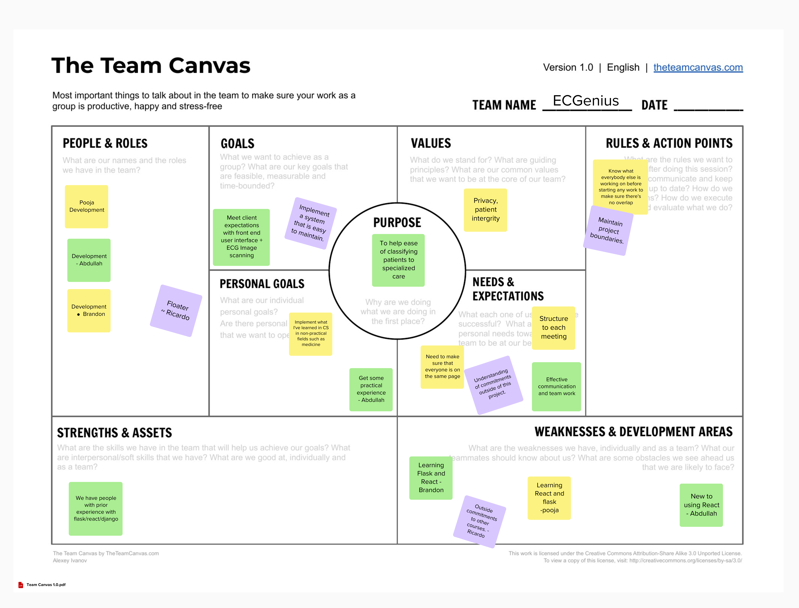

ECGscan - Team Work Document
Team Canvas

Scrum Roles
- Scrum Master : Hassan
- Product Owner : Mohamed
Belbin Team Roles
- Brandon: Implementer
- Hassan: Shaper
- Mohamed: Specialist
- Abdullah: Implementer
- Ricardo: Plant
- Rithwik: Shaper
| Names | Preferred Roles | Manageable Roles | Least Preferred Roles |
|---|---|---|---|
| Brandon | IMP, TW, SP | CO, SH, PL | ME, RI, CF |
| Hassan | SH, IMP, TW | CF, RI, CO | SP, ME, PL |
| Mohamed | SP, IMP, CO | TW, SH, PL | ME, RI, CF |
| Abdullah | IMP, ME, TW | SP, CO, CF | SH, RI, PL |
| Rithwik | IMP,CF,SH | PL, TW, SP | ME, RI, CO |
| Ricardo | PL, TW, RI | ME, SP, IMP | CF, CO, SH |
| Pooja | TW, ME, SP | SH, IMP, CO | CF, PL, RI |
Belbin Team Roles
Thinking Roles
PL (Plant)
Tends to be highly creative and good at solving problems in unconventional ways.
Ricardo (preferred)
Rithwik (manageable)
Brandon (manageable)
ME (Monitor Evaluator)
Provides a logical eye, making impartial judgments where required and weighs up the team's options in a dispassionate way.
Pooja (preferred)
Abdullah (manageable)
Brandon (least preferred)
SP (Specialist)
Brings in-depth knowledge of a key area to the team.
Mohamed (preferred)
Pooja (manageable)
Rithwik (manageable)
Brandon (preferred)
Action Roles
SH (Shaper)
Provides the necessary drive to ensure that the team keeps moving and does not lose focus or momentum.
Hassan (preferred)
Rithwik (preferred)
Pooja (manageable)
Ricardo (manageable)
Brandon (manageable)
IMP (Implementer)
Needed to plan a workable strategy and carry it out as efficiently as possible.
Brandon (preferred)
Abdullah (preferred)
Rithwik (manageable)
CF (Completer Finisher)
Most effectively used at the end of tasks to polish and scrutinize the work for errors, subjecting it to the highest standards of quality control.
Rithwik (preferred)
Pooja (manageable)
Abdullah (manageable)
Brandon (least preferred)
People Roles
RI (Resource Investigator)
Uses their inquisitive nature to find ideas to bring back to the team.
Ricardo (manageable)
Brandon (least preferred)
TW (Teamworker)
Helps the team to gel, using their versatility to identify the work required and complete it on behalf of the team.
Pooja (preferred)
Brandon (preferred)
CO (Co-ordinator)
Needed to focus on the team's objectives, draw out team members and delegate work appropriately.
Mohamed (preferred)
Pooja (manageable)
Brandon (manageable)
Meeting Minutes
Meeting Date: 2025/01/21
Meeting Summary:
- Discussed reason for the development of this project.
- Web interface (why we don’t want to develop a native app).
- No database, we are responsible for the matching algorithm.
- Specifically, we will create a function
match_ecg(digitized_ecg)which will return the output as a dictionary (to be defined). You can assume this function exists and works as intended. Your job is to build the plumbing around this.
TODOS:
- When2meet: https://www.when2meet.com/?28546438-lWcEK
- Shared doc (see this doc)
QUESTIONS:
Meeting Date: 2025/01/27
Meeting Summary:
- Divided roles for Software Design, Project Management, and Project Requirements.
- Divided Scrum Roles:
- Scrum Master - Hassan
- Product Owner - Mohamed
- Listed Belbin team roles.
TODOS:
- Pooja, Brandon & Ricardo: Project Management (Story Map, Project Plan, User Stories)
- Rithwik: Executive Summary, User Stories
- Abdullah: Similar Products/Open-Source Products/Technical Resources
- Mohamed: High-level Architecture
- Hassan: Low-fidelity User Interface
- General: Figure out Canvas - Solved.
QUESTIONS:
- Will there be a differentiated user interface based on the user’s role such as doctors, nurses, etc., or will there be a single user interface?
- Answer: Single.
- We are assuming that there is no centralized “admin” user, due to a potential breach of privacy.
- Answer: No need for frontend admin user interface.
- Do they want multiple language support, since they mentioned that English is not the first language of some?
- Answer: No need, just have it in mind. Use simple English.
- Do you want the user to have the option to take a photo, upload from camera roll, or both?
- Answer: Both, just checked.
- Are there any additional features that weren’t in the original scope that you want us to implement as well?
- Answer: Deployment.
- Do we need some sort of disclaimer for the information the app provides? Such that the final diagnosis is up to user discretion?
- Answer: About and disclaimer section under menu dropdown.
Meeting Date: 2025/01/28
Meeting Summary:
- Presented tech stack.
- Discussion regarding hosting (going to use Cybera(?) for now with instructions to deploy later).
- Lossy vs Lossless:
- Decision: Lossless for now. May add a feature to allow switching later.
- Presented steps - All look good.
- Need to ensure no PII is transferred.
- Either process on device.
- Or allow for user to crop.